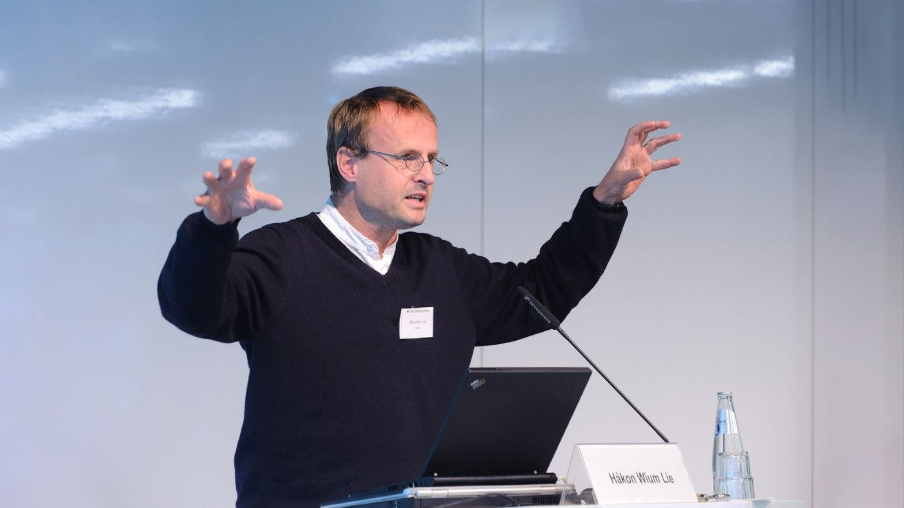

"In the near future, the web is going to be the master copy of human knowledge. We need to figure out ways to use that knowledge."
Achievements
- He invented Cascading Style Sheets in order to keep HTML semantic
- Worked at W3C to help create standards for web languages
- Stayed committed to making things easily accessible on the web